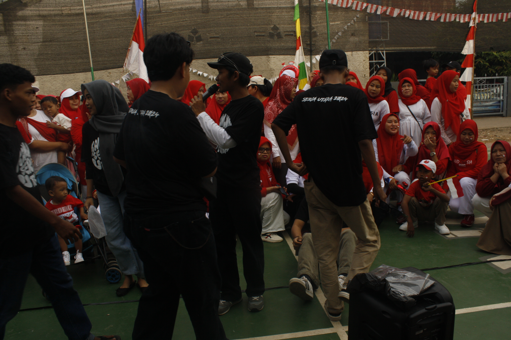

Youth members in the neighborhood
Sustainable
- Active in youth organizations and participating in social activities and community celebrations.
- Experienced in coordinating events and community service.
- Participated in neighborhood youth organizations, learning about cooperation and social awareness.
